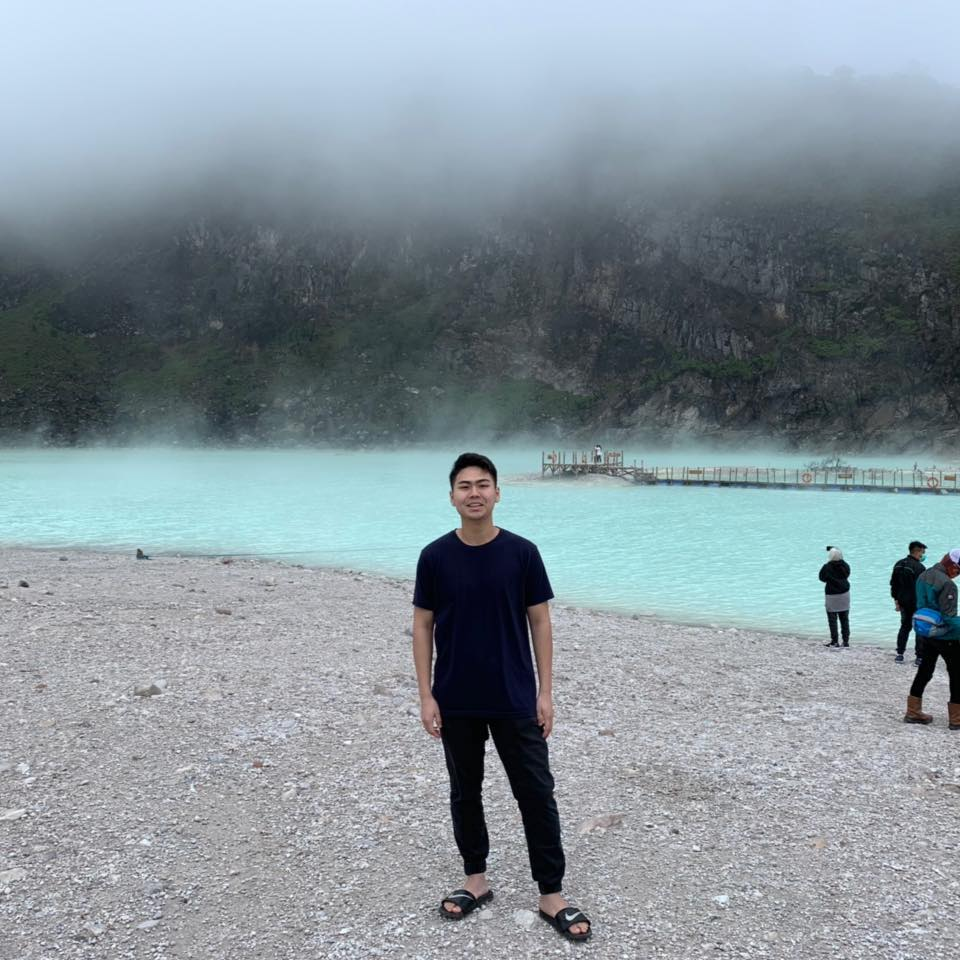

Welcome, my name is Ericko Anderson Halim!
Sup everyone again! I am a senior at UCLA studying Human Biology and Society and this is my last quarter as an undergrad T__T. I started my undergrad journey with no particular major in mind, I switched around between various engineering field and became interested in public health and even wanted to be a physician (both my parents are in healthcare). However, during this pandemic, I had a time of reflection on what I wanted to do in this short life and how I can impact this world through my own uniqueness. So, I've been learning programming and different technical skills in order to bridge the gap between technology and the medical field with the goal of improving and delivering greater access to healthcare for everyone. I was impressed by the Covid-19 Infection Map by John Hopkins University and that motivated me to take this class to be able to apply the knowledge I learned from this class to produce insights that are accessible to the general public.
I also loved playing games during my free time. Here is a couple of them:
Three places that are meaningful to me.
- UCLA: UCLA is definitely an important part of my life and to be here is such a blessing.
- Home: Ontario, CA is where I currently reside in, a place I call home.
- Birthplace: Jakarta, Indonesia is my birthplace. More specifically, the hospital at Pluit and moved to the United States at the age of eight.